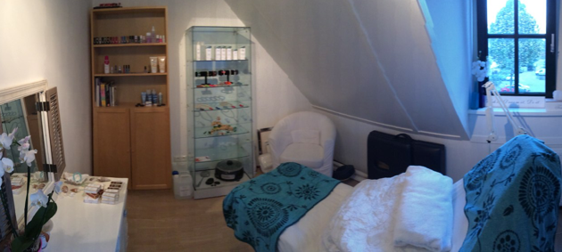

Behandelingen


![Gezichtsbehandelingen
Standaard behandeling +/- 60 min
Reiniging
Huidanalyse
Peeling i.c.m stomen
Dieptereiniging
Massage
Masker
Verzorgende dag/nachtcrème
Luxe behandeling +/- 90 min
Reiniging
Huidanalyse
Peeling i.c.m stomen
Dieptereiniging
Uitgebreidde Massage
Masker, tijdens masker een handmassage met handcreme
Verzorgende dag/nachtcrème
Kennismaking behandeling +/- 35 min
Reiniging
Dieptereiniging
Masker
Verzorgende dag/nachtcréme

Ontspanningsmassage
Nek, schouder en rug massage 30 min
Lichaamsmassage 60 min
Hot of cold stone massage 45 min
Een Hot Stone Massage kan voor verschillende doeleinden worden ingezet.
Deze massage is er voornamelijk voor de ontspanning. Door het gebruik van de hete stenen kan de ontspanning wel tot drie dagen voelbaar zijn in het lichaam. Maar ook bij gezondheidsklachten. Denk in dit geval aan bijvoorbeeld: rugpijn, slechte circulatie, artritis, stress of depressies werkt dit fantastisch.
Voor de volledige behandel/prijslijst klik hier](Behandelingen_files/shapeimage_3.png)